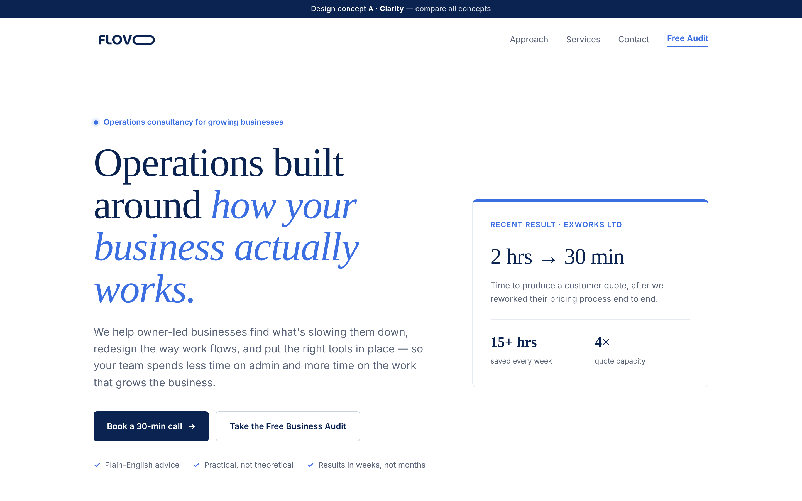
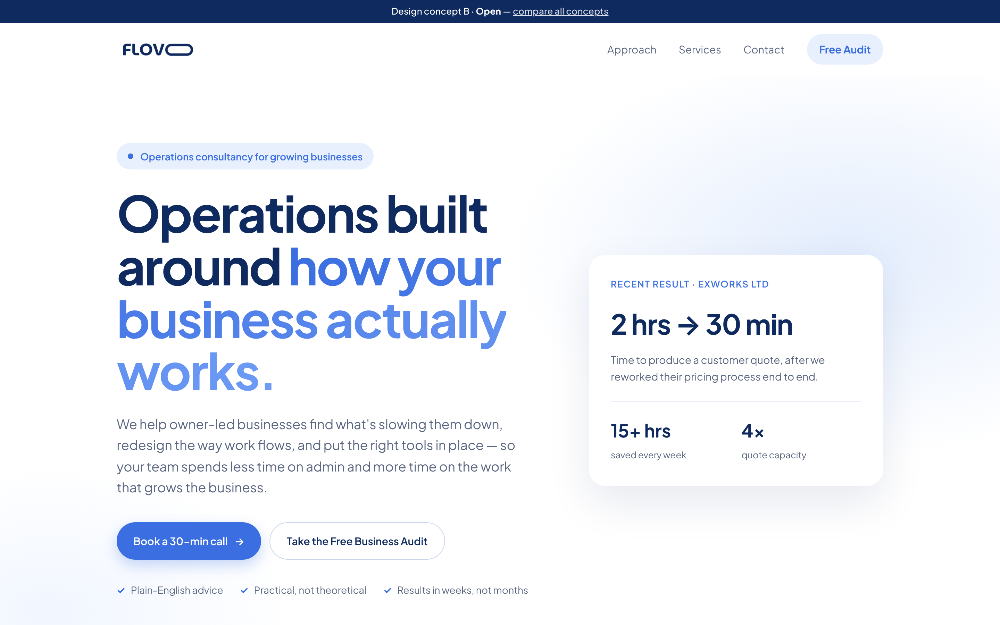
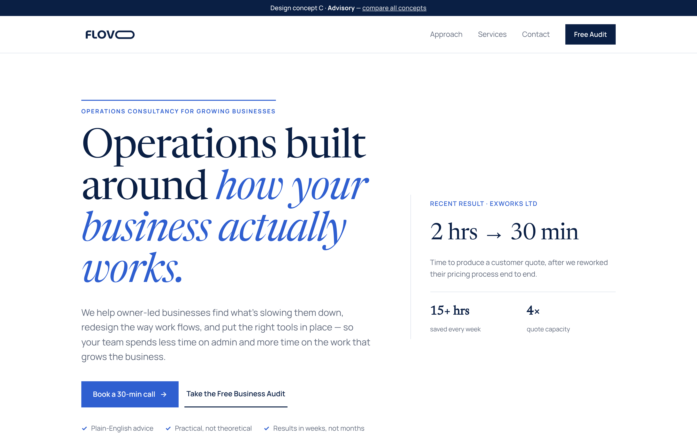

All three keep the current structure and content, move to a white background with brand-blue type, and reframe the copy around operations consultancy rather than software and AI. Click through to see each full page.

Crisp white, deep navy serif headlines with blue italic emphasis. Calm, measured and advisory.

Airy and friendly: soft sky-blue tints, rounded cards, pill buttons, one confident navy case-study panel.

Editorial and established: large serif type, rule lines, numbered columns, and a navy case-study band and footer.